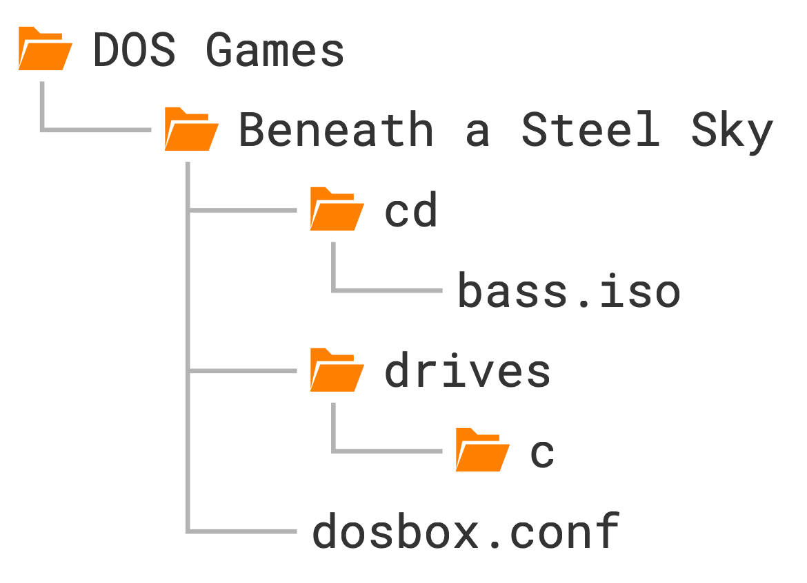

Beneath a Steel Sky¶
The next game we’re going to set up is Beneath a Steel Sky, a cyberpunk sci-fi adventure game from 1994. It’s one of the standout timeless classics of the adventure genre and best of all, Revolution Software released the game as freeware in 2003 (see their accompanying notes here).
Launching games more easily¶
Before we delve into the setup instructions, here are a few words about launching our growing collection of games more easily. Having to navigate to the game’s folder whenever we want to launch gets old really fast. Here’s how we can skip this step:
Windows
-
Create a batch file called
Start DOSBox Staging.batwith the following content:That’s the default installation path chosen by the installer.
%USERNAME%is your Windows user name. Of course, if you have installed DOSBox Staging to a different folder, you should adjust the path accordingly. -
Copy this batch file into your individual game folders and rename them to the names of the games, e.g.,
Prince of Persia.bat. -
Right-click on the batch file icon and select Send to → Desktop (create shortcut) in the context menu.
-
Now you can double-click on the new Prince of Persia.bat - Shortcut icon on your desktop to start the game (of course, you can rename the icon to Prince of Persia or whatever you like; this won’t change the name of the batch file it references).
macOS
You can rename the Start DOSBox Staging icons in the individual game folders to the names of the games; then, you can use Spotlight Search to start a game.
For example, rename Start DOSBox Staging in the Prince of Persia folder to
Prince of Persia. Start Spotlight Search by pressing Cmd+Space, then
type in “Prince”. The Prince of Persia icon will show up in the search
results—you can simply press Enter on it to launch the game.
Linux
The easiest way is to create a shell script with the following content (of
course, modify the path passed in with the --working-dir option so it points
to your game directory):
Then, create an icon on your desktop that launches this script, or start it however you like.
Mounting a CD-ROM image¶
We will set up the liberated “talkie” CD-ROM version of the game that has full
voice-acting. You know the drill: create a new Beneath a Steel Sky subfolder
inside your DOS Games folder and then the usual drives/c subfolder within
it. Download the ISO CD-ROM image
from the Beneath a Steel Sky
item at the Internet Archive and put it into a cd subfolder inside your
Beneath a Steel Sky game folder. The name of the cd subfolder has no
special significance; you could put the .iso image anywhere, but it’s good
to get into the habit of organising your game files systematically (e.g., you
could create a Manual or Extras subfolder too for the scanned manuals and
other extra files). It’s a good idea to rename Beneath a Steel Sky
(1995)(Virgin).iso to cdrom1.iso; our game folder has the game’s full name
anyway.
Speaking of manuals, make sure to get the scan of the Security Manual and the comic book
included in the boxed version of the game.
For the visually inclined, this is the structure we’ll end up with:

We need to mount the CD image to use it. Our C drive is the hard drive, so we’ll mount the CD-ROM image using the following letter D by convention. This is equivalent to having a CD-ROM drive in our emulated computer assigned to the drive letter D and inserting the game CD into it.
Mounting an image file, such as a floppy or CD-ROM image, is accomplished with
the imgmount command. It is pretty simple to use: the first argument is the
drive letter (d), the second the path to the CD-ROM image (cd/cdrom1.iso),
and the third the type of the image file (-t iso).
So this is what we need to put into our config:
Warning
If you’ve decided to keep the original name of the ISO, you’ll need to enclose it in double quotes because it contains spaces:
imgmount d "cd/Beneath a Steel Sky (1995)(Virgin).iso" -t iso
If you’re on Linux, make sure to get the casing of the ISO file exactly
right. Commands that operate on emulated DOS drives are case-insensitive,
just like real MS-DOS, but imgmount opens a file on your host directly,
so the casing rules of your host filesystem apply.
Tip
By always putting your CD-ROM images into the cd
subfolder within your game folder and renaming the ISO files to cdrom1.iso,
cdrom2.iso, and so on, it’s easier to reuse the mount commands between
configs.
You can always run imgmount /? or help imgmount if you need a little
reminder on how to use the command (although the full list of options can be a
little overwhelming).
This is what you should see in the DOSBox Staging window after startup if everything is set up correctly:
Local directory drives/c/ mounted as C drive
Z:\>imgmount d cd/cdrom1.iso -t iso
MSCDEX installed.
ISO image cd/cdrom1.iso mounted as D drive
Z:\>_
MSCDEX is the name of the MS-DOS CD-ROM driver, and the following line just informs us that our CD image has been mounted as drive D. Time to get down to business then!
Always mount CD-ROM images with imgmount
While you could mount CD-ROM images outside of DOSBox with other programs, too (e.g., Daemon Tools, ImgDrive, WinCDEmu, or the built-in Windows 10/11 ISO mounting feature), these alternative approaches often lead to compatibility problems. That’s because these tools don’t emulate the MSCDEX MS-DOS driver that DOS games expect.
For a trouble-free life, always use the built-in imgmount command.
There’s nothing to gain from using these 3rd party mounting tools for
DOS games.
Installing the game¶
Most games that come on CD images must be installed on the hard drive
first. Usually, there’s an executable called INSTALL.EXE or SETUP.EXE in
the root directory of the CD (the extension could be .COM or .BAT as
well).
Switch to the D drive by executing d: then run the dir command to inspect
the contents of the CD:
Volume in drive D is BASS
Directory of D:\
INSTALL EXE 28,846 06/15/1994 8:56a
README TXT 1,569 09/08/2005 1:34a
SKY DNR 40,796 07/07/1994 8:40a
SKY DSK 72,429,382 07/07/1994 8:40a
SKY EXE 402,622 07/07/1994 7:21a
SKY RST 53,720 07/07/1994 7:19a
6 file(s) 72,956,935 bytes
0 dir(s) 0 bytes free
Okay, so we have two executables with the .EXE extension and one text
file. View README.TXT using the more command (run more README.TXT). It
turns out it only contains some legal notice we don’t really care about.
INSTALL.EXE is what we’re after, so let’s run that!
We’re greeted by a pretty standard-looking text-mode installer. Either press any key or wait a few seconds to progress to the second screen, where you’ll need to select the installation path:

You can navigate the interface with the cursor keys, Esc, Enter, and
the mouse. The default C:\SKY install location is perfectly fine, so just
accept that by pressing Enter.
The installer will take us now to the setup screen where we can select the language of the in-game text (the voice-acting is English-only), and the sound settings:

English is fine, and the game has auto-detected our sound card correctly (Sound Blaster 16—this is the sound card DOSBox emulates by default), so accept these settings for now. And now, the counterintuitive part: to finish the installation and save the settings, we need to press the Exit Install button, which will take us to the (guess what?) Exit Install dialog:

Here you need to press the Save Setup button to finalise the settings and exit the installer.
As you can see, this is not exactly a masterclass in user interface design, but it does the job. Expect many DOS-era install and setup utilities to be similarly slightly illogical—often, it’s not completely obvious what to do, but it’s not too hard to figure out either. Reading the manual or some trial and error might help, too.
Anyway, after pressing Save Setup, the installer will exit and print out the following instructions:
Alrighty, let’s do as the computer says! It’s the easiest to put the above
commands into the [autoexec] section of our config, but let’s comment the
last sky command out for now by preceding it with a # character because we
don’t want to start the game just yet:
Changing the current directory¶
So before we run the game, what is this cd \sky command? Does it have
something to do with the cd subfolder where we put our CD-ROM image,
perhaps?
No, that’s just a coincidence. The cd command stands for Change Directory;
you use it to change the current directory, which is displayed as part of the
DOS prompt. So let’s analyse what these lines we put into the [autoexec]
section do:
The first command c: switches to the C drive (remember, the current drive is
the special built-in Z drive when DOSBox starts).
Then, the second cd \sky command changes the current directory to the sky
directory at the root level of the C drive. cd sky would also work because
the current directory is the root directory when we switch to the C drive
right after startup.
How do you go up one level to the parent directory? With the cd .. command
(two dots means “parent directory”, and a single dot means “current
directory”).
How do you go straight to the root directory? By executing cd \ (the \
backslash character means “root directory”).
You can also switch to a nested subdirectory with a single cd command, e.g.
if you have a directory called one at the root level which contains a
subdirectory two, which in turn contains another subdirectory three, you
can switch to three from any directory with the cd \one\two\three
command. Note this is an imaginary example:
Play around a bit with the drive and directory switching commands, then when
you’ve had enough, uncomment the last sky command in the [autoexec] section
(remove the # character).
Warning
You cannot switch to a different drive with the cd command (e.g., cd
z: or cd z won’t work); you must use the drive letter followed by a
semicolon (z: in this example).
Adjusting volume levels¶
After starting the game, don’t watch the intro just yet; press Esc to jump straight to the opening scene. There’s music playing—so far so good. Move the cursor over the door on the right side of the screen, and when it turns into a crosshair and the word “Door” appears next to it, press the left mouse button to inspect it. Lo and behold, you’ll hear our protagonist speak! But it’s barely audible; the music is just too loud.
There are a couple of ways to fix that. You can press F5 to bring up the game’s options dialog where you can lower the music volume, but that would make the total audio output too quiet. Worse yet, the setting doesn’t get saved, so you’d need to do this every single time when starting up the game.
As we’ve learned before, games with Sound Blaster support tend to use the sound card’s OPL synthesiser for the music and its digital audio capabilities for the speech. As the OPL synth and the digital audio have their dedicated mixer channels, their volumes can be adjusted independently.
“Wait a minute, what mixer channels now?!”
Okay, so DOSBox has an integrated audio mixer. All emulated sound cards have their own channels in the mixer, and certain “composite” audio devices may have multiple channels. The Sound Blaster is such a composite device; it has two mixer channels: one for the OPL synthesiser and one for digital audio.
Execute the mixer command at the DOS prompt to view the current state of the
mixer:

The first channel is the MASTER channel; this is the summed output of all
other channels, and it’s always present. Below that is the CDAUDIO channel,
the OPL and PCSPEAKER channels (you can guess these two, right?), and
finally, the SB channel, which is for the digital audio output of the Sound
Blaster.
The Sound Blaster card and PC speaker are enabled by default, which is why their
channels appear in the mixer. The CDAUDIO channel is added automatically
whenever we mount a CD-ROM image (as the CD image might contain audio tracks).
To adjust the volume of any mixer channel, we use the mixer command and pass
in the channel’s name as the first argument and the volume as the second,
expressed as a percentage value. So, to raise the volume of the SB channel
to 500%, we need to execute the following:
By default, the command prints out the new state of the mixer after the adjustment:

You can combine multiple mixer commands in a single line, e.g., in the below
example, we’re setting the OPL channel’s volume to 50% and the SB
channel’s to 500%:
You can run mixer /? or help mixer to see the full list of available mixer
commands.
Do we need to perform these mixer adjustments manually every single time
before running the game? Of course not! We can simply include them in our
[autoexec] section. The extra /noshow argument prevents the mixer from
displaying its current state; there’s no need for that in our automated
startup script.
Changing the emulated Sound Blaster model¶
DOSBox emulates the Sound Blaster 16 by default. This card can emulate all earlier Sound Blaster models and offers the widest compatibility with DOS games.
But back in the day, there were more Sound Blaster variants and clones you could shake a stick at, and many of them have quite different default volume levels. We don’t know what particular model the developers this game used, so it’s worth experimenting with a few different ones. Let’s start with a first-revision Sound Blaster Pro! Add the following snippet to your config:
We want to hear how the Sound Blaster Pro 2 sounds with the default, unaltered
volume levels, so make sure to comment out the previously added mixer
command in the [autoexec] section by prefixing it with a # character:
It seems this simple change alone does the trick; now the speech can be heard
clearly over the music, and the overall volume level is good too! Of course,
you can still fine-tune the individual channel volumes with the mixer
command if you wish to do so.
Disabling the Sound Blaster mixer¶
Another option we can try is not letting the game mess around with the OPL and
digital audio volumes. Starting from the Sound Blaster Pro 1, programs can
alter the volume levels of the Sound Blaster card’s internal mixer, but we can
disallow that by turning off the sbmixer setting. Comment out the sbtype
setting because we want to experiment with our default Sound Blaster 16 model
and leave the mixer command in the [autoexec] section commented out, too,
of course.
Well, that’s another way to fix the issue—the speech is now loud and clear!
But it’s a bit too loud. While the balance between the music and speech was
just perfect on the Sound Blaster Pro 2, the speech is now overpowering the
music. Compensating for that by lowering the SB channels volume in the mixer
is certainly an option, but we can conclude the developers must have tuned the
volume levels for a Sound Blaser Pro, so setting sbtype = sbpro2 is the best
solution.
When the game knows best
Not letting a game adjust volume levels can sometimes backfire, e.g., in a game that intelligently lowers the OPL music level whenever speech is playing. But it’s worth a shot; some games benefit from wrestling the control from them and putting the mixer into “manual mode”.
Adjusting the emulated CPU speed¶
If you did watch the intro video (which I told you to skip, but no hard feelings), you must have heard quite severe audio stutterings from the moment the narrator starts speaking. Well, if you haven’t, watch it now!
What’s happening here? DOS gaming spans almost two decades, and many different CPUs were in use during that period, all having wildly different performance or clock speeds. DOSBox doesn’t emulate any specific CPU but a “generic” one. So how does it know the speed at which to run a particular game then?
It doesn’t.
To explain what’s going on, we’ll need to understand a few technical details. It won’t hurt too much, I promise!
Real and protected mode¶
DOS games can be divided into two categories: older games and newer games (who would’ve guessed?) Older games released before about 1993 use something called real mode, while newer games released from 1993 onwards use protected mode. The important distinction here is that most CPU-hungry games are protected mode games (e.g., FPS games and flight simulators), while older pre-1993 real mode games generally have much less demanding performance requirements. Figuring out what exact CPU speed a particular game needs is almost impossible at the emulator level, but detecting whether a game uses real or protected mode is trivial. Therefore, DOSBox does the following automatic speed calibration by default:
-
For real mode games, it emulates 3000 CPU instructions per millisecond (roughly equivalent to a 386SX running at 20 MHz)
-
For protected mode games, it emulates 60 000 CPU instructions per millisecond (roughly equivalent to a Pentium running at 90 MHz).
The reasoning here is that older games are often sensitive to CPU speed; they might run too fast or misbehave if the CPU is too performant, hence the more conservative setting. Newer, more demanding games, however, benefit from the extra speed advantage and can generally handle faster processors without negative side effects.
While this approach generally gets all games running, manual tweaking of the emulated CPU speed is often required to make any particular game run smoothly. Protected mode games running at “too high” CPU speeds are particularly problematic because there might not be enough power left for smooth, glitch-free audio emulation. There’s zero point in emulating a faster CPU than the game needs as all that extra work could be put to better use—such as smoother audio emulation.
Beyond a Steel Sky is a protected mode game, but how we do know that? Let’s
comment out the last sky command in the [autoexec] section to prevent the
game from auto-starting, then launch DOSBox Staging in windowed mode. DOSBox
itself always starts in real mode, and let’s take a look at the text in the
DOSBox window’s title bar! It starts with the following:
Remember what we learned earlier: in real mode, DOSBox defaults to emulating 3000 CPU instructions, or cycles, per millisecond. The text in the title bar tells us the current cycles value, so indeed, we must be running in real mode now!
Now start the game with the sky command and keep your eyes peeled on the
title bar. The text will soon change to the following:
SKY.EXE is the name of the currently running program, and what do we see
right after that? 60000 cycles/ms! That’s the tell-tale sign of a protected mode game
because 60 000 cycles is our protected mode default.
And that’s the crux of the problem—there’s not enough horsepower left to
emulate the time-critical audio output without stuttering and glitches. The
solution is kind of obvious: instead of letting DOSBox run amok with the CPU
emulation, we’ll restrict it to a reasonable speed. cpu_cycles sets the
cycles value for real mode, and cpu_cycles_protected for protected mode.
Let’s insert the following snippet into our config:
Restart DOSBox Staging and watch the intro again. The audio glitches are now
gone! Well done, time for a beer (or your beverage of choice)! 

Real and protected mode
In very simple terms, real mode is a programming model that uses the legacy 16-bit mode of an Intel 386 or later CPU, while protected mode takes full advantage of its capabilities and runs in 32-bit mode. Protected mode is the real deal, but it couldn’t be universally utilised until 386 or better CPUs had gained widespread adoption. That happened around the year 1993; games released from thereon use protected mode almost exclusively.
You can easily spot protected mode games by the presence of so-called DOS
extenders in their main game
directories. DOS4GW.EXE, PMODEW.EXE, and CWSDPMI.EXE were the most
popular ones. These extenders also print out some fairly characteristic
messages as they start up when launching the game, so they’re easy to
recognise.
But you don’t need to worry about all that detail as DOSBox will indicate
with 100% accuracy whether a game runs in real or protected mode. Just
leave cpu_cycles and cpu_cycles_protected at their default 3000 and
60 000 cycles values, respectively (or set some different custom values
of your choosing), then watch the title bar of the DOSBox Staging window
while running the game.
Finding the correct speed for a game¶
Ok, so why set cpu_cycles_protected to 25 000 and not any other number? The game’s manual states
that a 386 or better processor is required. Indeed, the game works fine at
6000 cycles, which approximates a 386DX CPU running at 33 MHz, but the loading
times are a bit on the slow side. Setting the CPU cycles to
25 000—which roughly corresponds to a 486DX2/66—speeds up the
loading considerably without causing any negative side effects. This is not
surprising as the DX2/66 was one of the
most popular CPUs in the 1990s for gaming. This is what Wikipedia says about
it:
The i486DX2-66 was a very popular processor for video game enthusiasts in the early to mid-90s. Often coupled with 4 to 8 MB of RAM and a VLB video card, this CPU was capable of playing virtually every game title available for years after its release, right up to the end of the MS-DOS game era, making it a “sweet spot” in terms of CPU performance and longevity.
The following table gives you reasonable rough cycles values for the most popular processors:
| Emulated CPU | MHz | MIPS | Approx. cycles |
|---|---|---|---|
| 8088 | 4.77 | ~0.3 | 300 |
| 286 | 8 | ~0.7 | 700 |
| 286 | 12 | ~1.5 | 1500 |
| 386SX | 20 | ~3 | 3000 |
| 386DX | 33 | ~6 | 6000 |
| 486DX | 33 | ~12 | 12 000 |
| 486DX2 | 66 | ~25 | 25 000 |
| Intel Pentium | 90 | ~50 | 50 000 |
| Intel Pentium MMX | 166 | ~100 | 100 000 |
| Intel Pentium II | 300 | ~200 | 200 000 |
You can look up this handy table in the online help as well with the
config -h cpu_cycles command.
Always treat these values only as starting points; as explained previously, accurately emulating the speed of any given processor is not possible due to the “abstract” nature of DOSBox’s CPU emulation approach. But from a practical point of view, this does not matter much—you just need to find the optimal cycles value the game works well with.
If you’re playing 2D games from the 90s, an emulated 486DX2/66 will handle anything you throw at it. For 3D games, however, you’ll probably need to go up to Pentium or Pentium MMX levels, and Pentium II speeds are a must for 3D SVGA gaming at 640×480 or higher resolutions. For older real mode games, the default 3000 cycles is a good starting point, but try the 300 to 10 000 range and see if that improves anything.
You can fine-tune the cycles setting while playing the game with the Ctrl+F11 and Ctrl+F12 shortcuts (Cmd+F11 and Cmd+F12 on the Mac); these will increase the cycles value by 10%, or decrease it by 20%, respectively. Once you’ve arrived at a good setting, just update your config according to the cycles value displayed in the DOSBox Staging window’s title bar.
Always try to find the minimum cycles value for each game that gives you an adequate performance to conserve host CPU power and reduce the likelihood of audio glitches—overdoing it only makes things worse. Here’s a List of CPU speed sensitive games that should give you further tips and pointers.
Setting up Roland MT-32 sound¶
Installing the MT-32 ROMs¶
You might have noticed the game offers a sound option called “Roland” in its setup utility. What this refers to is the Roland MT-32 family of MIDI sound modules. These were external devices you could connect to your PC that offered far more realistic and higher-quality music than any Sound Blaster or AdLib sound card was capable of. They were the Cadillacs of DOS gaming audio for a while (they were priced accordingly, too), and many find they still sound excellent even by today’s standards.
DOSBox Staging can emulate all common variants of the MT-32 family, but it requires ROM dumps of the original hardware devices to do so. So first, we need to download these ROMs from here as a ZIP package, then copy the contents of the archive into our designated MT‑32 ROM folder:
| Windows | C:\Users\%USERNAME%\AppData\Local\DOSBox\mt32-roms\ |
| macOS | ~/Library/Preferences/DOSBox/mt32-roms/ |
| Linux | ~/.config/dosbox/mt32-roms/ |
If the above download link doesn’t work, search for “mt32 roms mame” and “cm32l roms mame” in your favourite search engine and you’ll figure out the rest…
After you’ve copied the ROM files into the appropriate location for your
platform, start up DOSBox Staging again and run the mixer /listmidi command.
This will verify your MT-32 ROM files and print a y character below the
MT-32 ROM versions that have been successfully detected. The green y
character indicates the currently selected MT-32 version. You should get an
output similar to this:

Selecting the MT-32 version¶
As you might have guessed already, you can tell DOSBox Staging to emulate an MT-32 model of a specific revision; you can read all about that on our wiki. But in practice, these two models will cover 99% of your gaming needs:
cm32l- Unless a specific MT-32 model is requested, DOSBox Staging emulates the Roland CM-32L by default, which gives you the best overall compatibility. This is a 2nd generation MT-32 with 32 additional sound effects that many games make good use of. Some studios, such as LucasArts, tended to favour the CM-32L, so their games sound a little bit better on this module.
mt32_old- Most older games, most notably the entire early Sierra adventure catalogue,
absolutely need a 1st generation MT-32; they will refuse to work correctly on
any other model or at least sound incorrect. For those games, use
mt32_old.
To enable MT-32 emulation and specify the model you wish to use, insert the following into your config:
How do you figure out which MT-32 model to use for a particular game? Well, you can’t do that easily without a lot of research and trial and error, but thanks to the tireless work of certain prestigious individuals, you can simply refer to the list of MT-32-compatible computer games that tells you the correct model to use for most well-known games.
Let’s consult the list and see what it says about Beneath a Steel Sky!
Requires CM-series/LAPC-I for proper MT-32 output. Buffer overflows on MT-32 ‘old’. Combined MT-32/SB output only possible using ScummVM
Well, the list knows best, so we’ll use the CM-32L for our game (as we’ve done in the above config example).
To appreciate the difference, you can try running the game with the
mt32_old model after you have successfully set it up for the cm32l.
You’ll find the sound effects in the opening scene sound a lot better on the
CM-32L.
Configuring the game for the MT-32¶
So now DOSBox Staging emulates the CM-32L, but we also need to set up the game for “Roland sound”. (They could’ve been a bit more precise and told us the game works best with the CM-32L, couldn’t they? It’s not even mentioned in the manual!)
Many games have a dedicated setup utility in the same directory where the main
game executable resides. This is usually called SETUP.EXE, SETSOUND.EXE,
SOUND.EXE, SOUND.BAT, or something similar. There is no standard; every
game is different. You’ll need to poke around a bit; a good starting point is
to list all executables in the main game folder with the dir *.exe, dir
*.com, and dir *.bat commands or the ls command and attempt running the
most promising-looking ones. The manual might also offer some helpful
pointers, and so can the odd text file (.TXT extension) in the installation
directory or the root directory of the CD (if the game came on a CD-ROM).
Certain games have a combined installer and setup utility, usually called
INSTALL.EXE or SETUP.EXE, which can be slightly disorienting for people
with modern sensibilities. You’ll get used to it.
This particular game turns things up a notch and does not copy the
combined installer-and-setup utility into C:\SKY as one would rightly expect. To
reconfigure the game, you’ll need to run INSTALL.EXE from the CD, so from the
D drive (I’ve told you—setting up the game itself is often part of the
adventure!)
So let’s do that. As we’ve already installed the game on our C drive, we’ll need to press Esc instead of Enter in the first Path Selection Window. Not exactly intuitive, but whatever. Now we’re in the Setup Menu screen, where we can change the language and configure the sound options. Select Roland sound, then press the Exit Install and Save Setup buttons to save your settings (don’t even get me started…)
Okay, now the moment of truth: start the game with the sky command. If
nothing went sideways, we should hear the much-improved, glorious MT-32
soundtrack! Now we’re cooking with gas!
So let’s inspect our favourite door one more time by moving the cursor over it and then pressing the left mouse button—hey, where did the voice-over go?! Yeah… you’ve probably glossed over this little detail in the tip from the MT-32 wiki page:
Combined MT-32/SB output only possible using ScummVM
What this means for us ordinary mortals is that the original game can either use the MT-32 for MIDI music and sound effects, and you get no digital speech, or only the Sound Blaster for OPL music, digital sound effects, and speech. MT-32 MIDI music and sound effects combined with digital speech via the Sound Blaster—the computer says no, buddy.
The game has just taught us an important life lesson: you can’t have everything, especially not in the world of older DOS games. You’ll have to pick what you value most: better music and only subtitles or full voice-acting with a slightly worse soundtrack. I’m opting for the latter, and remember, we can always enhance the Sound Blaster / AdLib music by adding chorus and reverb. This will get us a little bit closer to the MT-32 soundtrack:
Getting MT-32 music with speech (after all)¶
Except some people go, “Yeah, screw life lessons, I won’t have it!” Believe it or not, some people are still creating patches for 30-year-old DOS games to improve them in various ways. One such distinguished gentleman found a way to get MT-32 music and Sound Blaster digital speech and sound effects playing at the same time in Beneath a Steel Sky, so we’ll use his patch to get the most out of the game.
Download the skydrv.zip from
here, unzip it, and
then copy skydrv.com into drives/c/SKY. As per the forum post, you can run
the patched game from the mounted CD with this command:
Skip the intro and inspect the door again. Whoa, magic! MT-32 music and
speech at the same time! Yikes! Best put this into our
[autoexec] section!
Aspect ratio correction¶
We’re on a roll here; the game seems to provide us with endless education opportunities. We’ll divert our eyes (ears?) from the audio to the graphics next!
If you’ve checked out the comic book included with the game (and you definitely should!) and you have a keen eye for detail, you might have noticed that the images in the intro sequence are scanned from the comics, and they appear vertically stretched on-screen. In fact, they appear exactly 20% taller than they should (just trust me on that for a moment).
So, where’s this magical 20% vertical stretch factor coming from? DOSBox Staging enables aspect ratio correction by default to make 320×200 graphics appear exactly as it would on a 4:3 aspect ratio VGA monitor, which requires pixels to be drawn 20% taller. This is the most sensible default as aspect ratio correction is absolutely needed for the vast majority of DOS games to look correct, but there are exceptions—this game is one of those rare cases. One of the tell-tale signs is that the artwork in the intro was scanned using square pixels, and we need to disable aspect ratio correction for such games. With aspect ratio correction disabled, we’ll always get square pixels, no matter what (1:1 pixel aspect ratio, or PAR). All this is explained in a lot more detail in the advanced graphics options chapter at the end.

Right: The original image from the comic book included with the game
That’s quite easy to do, and we’re also setting the viewport resolution to 4x integer scaling, effectively, because the game would appear too blocky when fit to fullscreen:

Beneath a Steel Sky with aspect ratio correction disabled

Well, we won’t escape this way…
Of course, this would’ve been a very misguided effort if it had only fixed the intro graphics but not the in-game visuals. Fortunately, it turns out both the intro and the in-game content had been drawn assuming square pixels. For example, note how the floppy icon looks like a tallish rectangle with aspect ratio correction enabled; that’s wrong; floppies should appear as perfect squares. Human figures and circular objects would also appear slightly elongated vertically with aspect ratio correction enabled. Ultimately, we know the game was developed by Revolution, a European studio, and they also released the game for PAL Amigas that have square pixels. We also know that Revolution was very fond of the Amiga and thus can be considered an Amiga-first developer. For such games, disabling aspect ratio correction is almost always the correct answer.
So, the rules of thumb:
aspect = on
-
For most games primarily developed for DOS. This is the DOSBox Staging default, and it ensures the overwhelming majority of DOS games appear correctly out of the box.
-
For games primarily developed for the Amiga or Atari ST by a North American studio for the NTSC standard. (Note that even if the work was performed by a European studio but was commissioned by North Americans, that usually means the game was primarily intended for the NTSC-only North American market, so you need aspect ratio correction.)
aspect = off
- For most games primarily developed by European studios for the Amiga or Atari ST.
Here’s a non-exclusive list of the most important European studios:
Bitmap Brothers, Bullfrog, Coktel Vision, Core Design, DMA Design, Delphine, Digital Illusions, Firebird, Horror Soft / Adventure Soft, Infogrames, Level 9, Magnetic Scrolls, Ocean, Psygnosis, Revolution, Sensible Software, Silmarils, Team 17, Thalamus, Thalion, Ubisoft
From squares to rectangles
For the vast majority of computer games from the 1980s and ’90s featuring 2D graphics, the art was created once for the “leading platform” and then reused in the various other platform conversions. It was just not economical to draw the graphics multiple times in different aspect ratios and resolutions, hence this was done extremely rarely.
We’ve explained earlier that CRT monitors in the DOS era had a 4:3 aspect ratio, so in 320×200 mode the pixels had to be 20% taller for the image to completely fill the screen. DOSBox Staging does this aspect ratio correction by default, which results in games primarily developed for DOS PCs assuming 1:1.2 pixel aspect ratio to look correct (as the artist intended). We’ll get to the detailed mathematical derivation of the 1:1.2 PAR in the last chapter.
But what about games where the leading platform was the Amiga or the Atari ST, and the game was developed by a European studio? The analog TV standard in Europe was PAL. Therefore, Amigas sold in Europe were PAL machines that had square pixels in the 320×256 screen mode, the resolution most commonly used by PAL Amiga games. So what these European studios usually did was to draw the art assuming square pixels, but using only a 320×200 portion of the 320×256 total available area. On PAL Amigas, the art appeared in the correct aspect ratio but letterboxed; on NTSC Amigas and DOS PCs that had the 320×200 low-res screen mode, the art filled the whole screen but appeared slightly stretched vertically (by 20%). No one seemed to complain about this, and they saved a lot of money by not having to draw the art twice, so this economically motivated compromise became a common practice.
However, now you have the option to enjoy these games in their correct aspect ratio, as per the artists’ original intention, by simply disabling DOSBox Staging’s default aspect ratio correction.
Don’t trust the circles!
Even keener observers might notice the image from the intro on the left features a circle that only appears perfect with aspect ratio correction enabled, in which case the image from the comics is stretched. However, with aspect ratio correction disabled (as shown above), the circle appears to be a squashed oval, but the image from the comics looks perfect.
The explanation is simple: the person who drew the circle around the scanned image did it assuming 1:1.2 pixel aspect ratio, so it looked like a perfect circle to him on his PC VGA monitor.
That’s a common theme: some games end up with assets added to them during the porting process, which can sometimes result in mixed aspect ratio assets in a single game. Sometimes, it’s just impossible to make the game appear correctly using a single fixed pixel aspect ratio, especially if such mixed aspect ratio assets are being displayed on screen at the same time.
Generally, you cannot trust the circles. Sometimes, they will appear perfect when the correct aspect ratio is used; sometimes, they won’t. It’s much more reliable to judge aspect ratio correctness by looking at common objects, human bodies, and human faces.
Arcade monitor emulation¶
Now that we have brought up the Amiga, it’s worthwhile mentioning a special feature of the CRT emulation, which is not quite authentic but still a lot of fun!
Home computer and arcade monitors (also known as 15 kHz monitors), such as the Commodore monitors typically used with Amiga computers, were quite different from VGA CRTs. They displayed low-resolution content with thick scanlines, similar to EGA monitors, and were a lot less sharp. While this wasn’t great for displaying text and spreadsheets, it made low-resolution pixel art appear in a more favourable light.
We can enable this special fantasy mode with the following setting:
Now you can play the game with Amiga-like graphics and MT-32 or OPL sound from a strange parallel universe! 😎

Beneath a Steel Sky from a parallel universe running on an Amiga in 256-colour mode
Final configuration¶
Putting it all together, this is our final config:
[cpu]
cpu_cycles_protected = 25000
[sdl]
fullscreen = on
[render]
aspect = off
viewport = 1280x800
# uncomment for arcade monitor emulation
#glshader = crt-auto-arcade
[sblaster]
sbmixer = off
[midi]
mididevice = mt32
[mixer]
reverb = large
chorus = strong
[autoexec]
imgmount d "cd/cdrom1.iso" -t iso
# original game
#c:
#cd sky
#sky
# patched game (MT-32 music & SB speech/sfx)
d:
c:\sky\skydrv cfg=c:\sky
exit
The patched game is clearly superior, but you can still run the original
version: just uncomment the three lines below # original game,
then comment out the two lines after # patched game. You can switch
between Roland MT-32 and Sound Blaster & AdLib sound at will by only
reconfiguring the game via INSTALL.EXE—you won’t need to make any further
changes to the DOSBox config.
About reverb presets
In case you’re wondering, enabling reverb and chorus does not add these effects to the output of the MT-32. That’s undesirable as the MT-32 has its own built-in reverb and chorus, so DOSBox Staging is intelligent enough not to apply these effects twice on its output.
The reverb presets add a tiny little bit of reverb to the digital audio
(PCM) outputs, such as the SB channel, mostly just to help the PCM
output blend better with the synthesiser’s output (e.g., the OPL
channel), which features a prominent reverb.